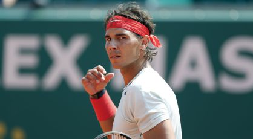

Al cuarto de hora, Marinko Matosevic levanta los brazos como si hubiera ganado el título. Aplaude la grada, que celebra que el australiano acabe de ganar un juego (4-1) ante Rafael Nadal. Antes y después de ese gesto cargado de ironía, el español, que juega con la rodilla izquierda vendada, abre una brecha tras otra en el marcador. Nadal gana 16 de los 18 primeros puntos (4-0), cierra el primer set con un 100% de peloteos ganados con su primer saque y así instala el encuentro en la dinámica de lo inevitable: por mucho que su contrario se adelante 2-0 y doble bola de break en la segunda manga, es victoria para él o victoria para él, no hay alternativa, solución distinta, al cruce entre el número cinco mundial y el número 54. La victoria (6-1 y 6-2) le cita en octavos con un tenista que siempre le dio problemas, el alemán Kohlschreiber. Así pasan las cosas en Montecarlo. Víctima de una dolorosa torcedura de tobillo, el serbio Novak Djokovic decidió participar en el último momento, y hoy eliminó 4-6, 6-1 y 6-4 al ruso Youzhny en un partido espectacular, pleno de bellos intercambios, en los que el serbio pasó auténticos aprietos. Impulsado por su extraña victoria en el masters 1000 de Miami, donde solo una lesión de David Ferrer le evitó la derrota, el británico Andy Murray está a la caza de su primera final sobre tierra. Los dos campeones de grandes, sin embargo, saben que el torneo del Principado tiene dueño, que hay un ogro que manda, que Nadal ha ganado ocho veces seguidas sobre esa arcilla que mira al Mediterráneo. A falta de pruebas mayores, el mallorquín compitió un partido de los que luego se comentan en el vestuario: fue de más a menos, con un arranque fulgurante que luego no tuvo continuidad en la segunda manga; la derecha se le deshilachó cuando quiso cerrar con contudencia los intercambios; y, pese a la lógica falta de ritmo tras un mes sin competir, se movió con soltura sobre la arcilla. Matosevic, de brillante revés, soñó con un 3-0 en la segunda manga, pero acabó ahogado por el alto ritmo de Nadal, que castigó con un 6-0 su osadía. El australiano jamás cree que puede ganar el duelo. Es lo que ocurre cuando Nadal está al otro lado de la red en Montecarlo: impresiona.
El Madrid, que apela a su memoria épica, no solo tendrá que cambiar su actitud de Dortmund para despachar al Borussia, sino mejorar notablemente su juego y tener mayor consistencia táctica